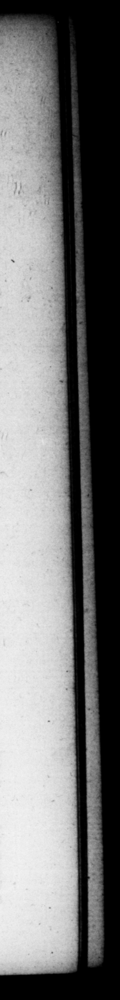

T1B. NERO CESAR. 5 uxoremque Liviam Drufillam & tunc gravidam, & ante jam apud fe filium enixam, perenti Avguſto conceſſit. Nec multo poſt diem objit, utroque liberorum ſaritite, Tiberio Druſoque eron ibus. 5. Tiberium quidam Fundis natum ex iſtimaverunt, ſecuti levem conjecturam, quocl matema ejus avia Fundana fuerit, & quod mox ſimulachrum Felicitatis ex ſenatus conſulto publicatum ibi fir. Sed ut plures, certioteſque tradunt, natus eſt Romæ in Palatio, xvi Kal. Decemb. M. lit mo Emilio Lepido iccrum, IL. Munatio Planco COSS, poſt bellum Philippenſe, Sic enim in faſtos actaque publica relatum eſt. Nec tamen deſunt ui partim antecedente anna, Hirtii ac Panſæ; partim inſequente, Servilii Ilaurici Antoniique confulatu, genitum eum ſeribant. 6. Infantiam pueritiamq; habuir laborioſam, & exercitim: comes uſquequaque parentum fuge: quos quidem apud Neapolim ſub irtuptionem hoſtis navigium clam petenres, vagitu {uo pane bis prodidit; ſemel cum A nutricis ubere, item cum à ſinu matris raptim auferretur ab 11s qui pro neceſſitate temporis mulierculas levare onere ten tabant. Per Siciliam quoque & Achajam circumductus, a8 Lacedzmoniis publice, quod in tutela Claudiorum erant, demandatus, digrediens inde itinere nocturno, diſcrimen vitæ adiit: flamma repente è ſilvis undique exorta, adeoque omnem comitatum circumplexa, ut Liviæ pars veſtis & capilli ambureremur. Munera, quibus A Pompeja Sext, Pompeii ſorore in Sicilia donatus eſt, chlamys & fibula, item bullæ aurea, durant, oltendunturque and trouble. Hz went along with bis ®pocor women of their burt hen. > Þ» tion ſoon after brought about amongſt the ſeveral . parties, he 56. turned to Rome; and at the requeſt of Auguſtus, gave up to him bis wife Livia D t was then big with child, and had before bore him 4 ſon: and died not long after, l:aving behind him too ſons, Tib:11us and Druſus Nero. 5. Some have fancied tha; Tiberius nas born at Fundi, but upon @ very rrifling foundation for it, becauſe his 90: her grandmother was of Fund — becauſe the image of good fortune was . by @ accree of the ſen ne refed in 4 publick place there. But as the generality of authors and of better credit ſay, he was born at Rome, in the Palatium, upon the 16th of the calends of december, when M. fEmilius Lepidus was ſecond time conſul, with Lucius Munatius Plancus, after the battle of Philipps ; for thus it is regiſtered in the calendar, and the publick acłs. And ver there are ſome uh ſay that he was born the year beftre in che conſulſhip of Hirtius and Panſa, and others ſay in the year foll wing, in that of Servilius Iſauricus and Anth'ny. 6, His infancy and childhood was attended with a great deal of danger parents in their flight every where, whom he had like to have betray'd by his crying at Maple, as they were privately making down to there ſhip, upon the enemy's breaking into the towns once, then be was taken from © his nurſe's breaſt, and again when he was haſtily taken from his myther's boſom, by ſome of the company, who in that neceſſity of haſte, were for eaſing the ng carried thr Sicily and Achala, and entruſted ſome time to the government of the Lacedemonians, who were under the protetion of the Claudian family, upon his departure thence by night, run the hazard of bis lite, by\ fire Sudaerly burſting au: of a wood du 4 hands, that en-loſed the whole conpany, ſo that part of Livia's claths and her hair were burnt. The jreſentsmade him by Pompeia ſiſter to Sex*us Ne in Sicily, wiz. 4 clak, and a c aſp, and golden bulls, are yet in being, and ſbe un at Baie 10 this day.
